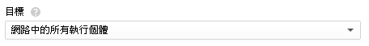
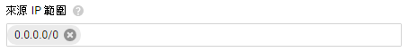

本文章將介紹 GCP 防火牆設定
防火牆入門介紹
一、防火牆
一個專案開啟後會有預設防火牆，但是 IP 跟目標 ( VM ) 都是全開是不安全的，所以我們要做防火牆的修改，或是建立新的防火牆
先進入 VPC 網路 → 防火牆規則

點選建立防火牆規則，或是直接修改預設防火牆也可以 ( 點選名稱直接進入編輯 )

此畫面是建立畫面，這次只介紹比較常用到的選項
1. 填寫名稱 ( 命名隨意 )：英文小寫不能有空格，說明 ( 選填 )：就是註解

2. 優先等級：防火牆優先順序 0 到 65535 預設 1000，點擊藍色字可以檢查其他防火牆順序

3. 有分輸入 ( 從外部輸入到 VM ) 跟輸出 ( VM 輸出到外部 ) 方向，設定基本一樣本章就都已輸入為基準

4. 目標：有三個選項本章只介紹常用的前 2 個選項

網路中的所有執行個體：只要在專案下 VM 都會套用

指定的目標標記：在目標代碼設定一個目標代碼 ( 名稱隨意 )，設定目標代碼後只會讓設定同樣代碼 VM ( 在 VM 內是網路標記 ) 使用此防火牆

VM 設目標的地放在設定管理、磁碟、網路、SSH 金鑰 → 網路 → 網路標記，記得標記 2 邊 ( 防火牆和 VM ) 都要設定一樣
如果 VM 建好到編輯裡面更改即可

5. 來源 IP 範圍：輸入需要連線的 IP 0.0.0.0/0 是 IP 全開，但不建議這樣做

6. 通訊協定和通訊埠：開啟需要的埠，有2個選項全開和指定埠號 ( 但不建議全開 )
埠是有格式：基本格式 tcp/udp:( 要開的埠號 )，使用 - 可以開範圍埠號，使用 ; 連開埠號
ex：tcp:22
ex：udp:5000-6000
ex：tcp:22;udp:5000-6000
建立好畫面，剛剛選擇的設定上面都會看的到
也可以點擊名稱可以進入查看更詳細的防火牆資訊，點擊編輯可以再做修改

7. 停用防火牆：把因為各種原因使用的防火牆停止使用，等待下次使用就不需要在重建了
停用防火牆如圖所示 ( 已建立防火牆進入編輯停用即可 )

舉例：設定 SSH 連線防火牆 ( SSH 連線使用的 tcp 是 22 )
設定目標代碼後只會讓設定同樣代碼 VM 使用此防火牆，設定 IP 跟埠號使特定 IP 才可以連線
如圖只有使用 test 標記的 VM 可以使用此防火牆，然後只有 117.165.197.21 這個 IP 可以使用 SSH 連線 ( tcp:22 )
補充：在建立 VM 的時候會有防火牆 HTTP 和 HTTPS 讓你打勾
VM 打勾建立好會在防火牆幫你建 2 個防火牆出來，但是 IP 是全開標記也幫你設定好，需要再做修改